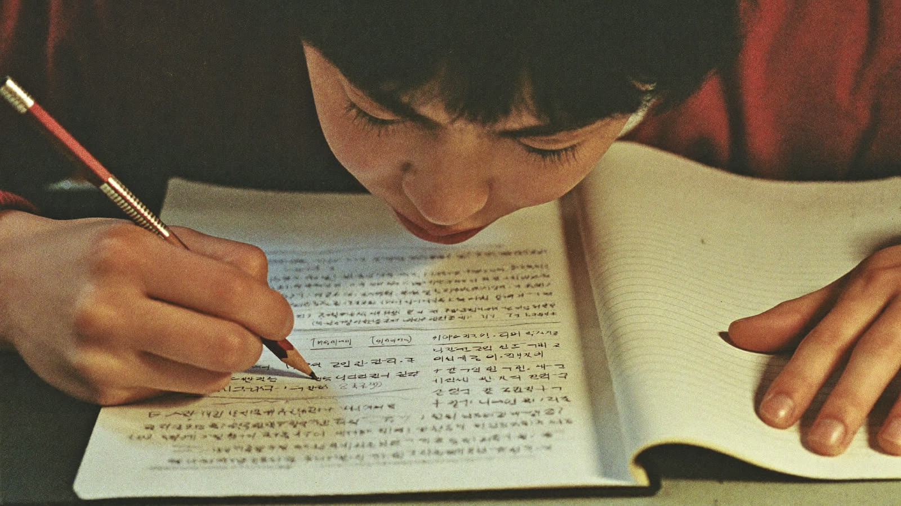

당신이 빼앗긴 시간을
돌려드립니다.
손으로 쓴 식을 잘못 읽고, 확신에 찬 목소리로 틀린 답을 설명합니다.

그리고 "그러므로 답은 거짓"이라고 단정합니다. 아니라고 다시 설명해야 하는 건 학생 쪽입니다.
사진을 다시 찍고, 잘못 읽은 걸 바로잡고, 처음부터 다시 설명합니다. 문제를 푸는 시간보다 도구를 설득하는 시간이 깁니다.
강의는 끝났는데, 집에 오면 처음부터 혼자 다시 시작이에요.
대형 강의에서 질문하며 따라가는 사람은 드뭅니다. 매번 AI에게 처음부터 설명해달라 하기도 지칩니다.
내가 그린 그래프는, AI도 못 알아봐요.
풀 때마다 사진을 찍어 올리는 것도 번거로운데, 손으로 그린 기하와 그래프는 인식조차 되지 않습니다.
- 영상 · 사진 자리4:301
쓰던 노트 그대로
다시 찍거나 옮겨 적을 필요 없이, 학생이 그은 획을 그대로 읽습니다. 인식이 안 돼 되돌아가는 시간이 사라집니다.
- 영상 · 사진 자리4:302
손으로 그린 도형까지
그래프와 기하 모델을 이미지가 아니라 풀이의 일부로 읽습니다. 설명을 다시 붙이지 않아도 됩니다.
- 영상 · 사진 자리4:303
어제를 기억합니다
매번 처음부터 소개하지 않아도 됩니다. 지난 풀이와 습관 위에서 오늘을 이어서 시작합니다.
당신이 빼앗긴 끈기를
돌려드립니다.
끈기는 타고나는 성격이 아닙니다. 어려움을 끝까지 통과해 본 횟수만큼 자랍니다. 그런데 그 어려움이 통째로 사라졌습니다.

이 시간은 낭비가 아니라 배움이 일어나는 자리입니다.
오래 고민하는 시간, 틀린 이유를 되짚는 과정, 자기 언어로 다시 설명해 보는 노력. AI는 이 모든 것을 '불필요한 불편'으로 분류해 치워버렸습니다. 끈기가 자라던 자리가 통째로 사라진 것입니다.
시급 8만 원 과외를, 매일 붙일 순 없잖아요.
과외와 과외 사이, 혼자 붙들고 씨름하는 시간을 채워줄 것이 필요해요. 그런데 시중엔 마땅한 게 없어요.
- 영상 · 사진 자리4:301
답을 먼저 주지 않습니다
막힌 지점을 찾아 되묻습니다. 정답은 학생이 스스로 도달한 뒤에야 확인합니다.
- 영상 · 사진 자리4:302
끝까지 쓰게 합니다
중간에 포기하려는 순간에는 발판을 놓고, 너무 쉽게 답을 얻으려는 순간에는 다시 질문합니다.
- 영상 · 사진 자리4:303
설명해야 넘어갑니다
자기 언어로 말할 수 있을 때 다음으로 갑니다. 고개만 끄덕인 개념은 넘기지 않습니다.
 SM
SM JM
JM EW
EW SB
SB JS
JS JB
JB